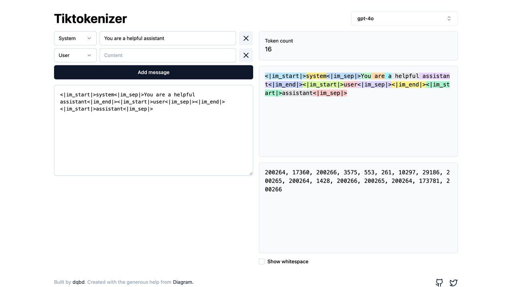

Estos son los términos que más aparecen al leer sobre IA y agentes, explicados en una frase cada uno, sin dar por hecho que ya sabes de qué va el tema. Cada término va acompañado de un ejemplo de dónde te lo vas a encontrar en la práctica, no solo la definición técnica seca, porque un término solo se queda de verdad cuando se ve funcionando en un caso concreto y reconocible.
Por qué merece la pena conocer estos términos
No hace falta saber programar ni tener formación técnica previa para beneficiarse de este glosario. La jerga de la IA se ha vuelto parte del vocabulario habitual en reuniones de trabajo, artículos de noticias y decisiones de compra de herramientas, y no entender un término concreto suele llevar a dos problemas distintos: o bien aceptas afirmaciones de marketing sin poder evaluarlas críticamente ("nuestro modelo tiene la ventana de contexto más grande del mercado" suena impresionante hasta que sabes qué significa realmente y si te importa para tu caso concreto), o bien te sientes excluido de conversaciones donde en realidad los conceptos, una vez explicados con claridad, no son tan complicados como parecen a primera vista.
Un ejemplo habitual: alguien lee que un modelo "alucina" y asume que es un fallo raro y poco frecuente, cuando en realidad es un comportamiento estructural presente en mayor o menor medida en todos los modelos actuales. Saber esto cambia cómo usas la herramienta — no como sustituto ciego de la verificación, sino como un asistente cuyo trabajo hay que revisar con criterio, igual que revisarías el de cualquier colaborador nuevo. Esta guía trata el tema con más detalle en el artículo dedicado a las alucinaciones de la IA, enlazado al final de esta página.
También ayuda a la hora de evaluar contratos y propuestas comerciales de proveedores de software que integran IA. Frases como "usamos RAG para garantizar precisión" o "nuestro modelo tiene fine-tuning específico para tu sector" son, en la práctica, promesas verificables si entiendes qué significa cada término — puedes preguntar directamente "¿qué documentos concretos consulta el RAG?" o "¿con cuántos ejemplos se hizo el fine-tuning?" en vez de aceptar el término como si fuera automáticamente sinónimo de calidad. Esta capacidad de hacer la pregunta correcta es, en la práctica, el verdadero valor de un glosario como este: no memorizar definiciones para repetirlas, sino ganar la seguridad de detectar cuándo un término técnico se está usando con precisión y cuándo se está usando solo por su efecto persuasivo.
Confusiones habituales entre términos parecidos
- Fine-tuning vs. RAG: el fine-tuning reentrena el modelo de forma permanente; RAG no toca el modelo, solo le da documentos como referencia al momento de responder
- Agente vs. chatbot: la diferencia no es de "inteligencia", sino de capacidad de acción — un agente ejecuta acciones reales, un chatbot solo genera texto
- Alucinación vs. error de datos: una alucinación es el modelo inventando; un error de datos es cuando la fuente original ya estaba mal. El segundo no es culpa del modelo
- Token vs. palabra: una palabra larga puede dividirse en varios tokens, mientras que varias palabras cortas pueden empaquetarse en menos
- Ventana de contexto vs. memoria: la ventana es lo que el modelo ve en la conversación activa; la memoria persiste entre conversaciones distintas. Un modelo con ventana enorme pero sin memoria olvida todo al empezar una conversación nueva, igual que uno con ventana pequeña
- Prompt engineering vs. fine-tuning: el primero ajusta las instrucciones sin tocar el modelo; el segundo lo reentrena. El prompt engineering es la primera opción a probar siempre, por ser más rápido, más barato y completamente reversible
Reconocer estos pares de términos parecidos evita uno de los errores más comunes al leer sobre IA: asumir que dos palabras que suenan similares describen lo mismo, cuando en realidad responden a mecanismos técnicos distintos con implicaciones prácticas (y de coste) muy diferentes entre sí. Confundirlos no es solo un error académico sin consecuencias — puede llevar a elegir la técnica equivocada para resolver un problema concreto, o a malinterpretar por completo lo que promete realmente una herramienta cuando la describe usando uno de estos términos.
Conceptos básicos y cómo funcionan por dentro
El tipo de modelo detrás de Claude, ChatGPT o Gemini, entrenado con enormes cantidades de texto. Ejemplo: cuando dices "uso ChatGPT", en realidad usas un LLM concreto a través de esa interfaz.
La unidad mínima de texto que procesa un modelo. Como regla de bolsillo, en inglés un token es algo menos que una palabra (en torno a ¾); en español el mismo texto da más tokens, porque el idioma se parte en más trozos. Ejemplo: un correo de 500 palabras equivale a unos 650-700 tokens, y ese número determina cuánto cobra la API por procesarlo.
La cantidad máxima de texto que un modelo puede "tener en mente" antes de empezar a olvidar. Ejemplo: si pegas un documento largo y preguntas sobre el principio, una ventana pequeña puede hacer que ya no lo "recuerde". Lo desarrollamos en la guía de ventana de contexto y memoria.
La instrucción que le das al modelo; su calidad determina en gran parte la calidad de la respuesta. Ejemplo: "escribe sobre marketing" es pobre; dar contexto real y un tono concreto es útil.
Cuando el modelo genera información falsa con la misma seguridad que información correcta. Ejemplo: una cita bibliográfica que suena perfectamente real pero no existe.
El proceso de exponer al modelo a grandes cantidades de datos para que aprenda patrones. Ejemplo: ocurre mucho antes de que tú escribas tu primer mensaje.
Ajustar un modelo ya entrenado con datos específicos para especializarlo. Ejemplo: una empresa que ajusta un modelo con miles de conversaciones de soporte para su tono de marca.
Una representación numérica del significado de un texto, usada para comparar similitud. Ejemplo: permite encontrar un documento relevante aunque no comparta ni una palabra exacta con tu pregunta.
Parámetro que controla cuánta variedad tiene la respuesta; más baja da respuestas más predecibles. Ejemplo: baja para código, más alta para lluvia de ideas creativas.
El proceso de generar una respuesta a partir de un modelo ya entrenado. Ejemplo: el tiempo que tarda en aparecer la respuesta en pantalla es, en gran parte, tiempo de inferencia.
Para no perderse: si un término técnico aparece en una guía y no lo reconoces, probablemente está aquí. Guarda esta página en tus marcadores y vuelve a ella cuando lo necesites, en vez de intentar memorizar los treinta términos de una sola vez.

Herramientas, arquitecturas y uso diario
Un sistema de IA que puede decidir y ejecutar acciones por sí mismo, no solo responder texto. Ejemplo: una herramienta que no solo te dice cómo organizar tus archivos, sino que los mueve ella misma.
El estándar abierto que permite conectar un modelo con herramientas externas de forma uniforme; hoy lo gobierna la Linux Foundation (a través de la Agentic AI Foundation). Ejemplo: el mismo servidor MCP puede usarse con distintos asistentes sin reescribirlo cada vez.
Técnica para que el modelo consulte documentos concretos antes de responder. Ejemplo: un asistente de soporte que cita el manual real de tu producto, no información inventada.
Diseñada para buscar por similitud de significado usando embeddings, no por coincidencia exacta. Ejemplo: buscar "cómo cancelar mi cuenta" encuentra "dar de baja el servicio".
La capacidad de un modelo de decidir cuándo usar una herramienta externa. Ejemplo: el modelo decide consultar una API del clima en vez de inventar una respuesta.
La vía técnica por la que una aplicación externa se conecta a un modelo de IA para usarlo de forma programática. Ejemplo: una app que dice "impulsado por IA" normalmente se conecta a la API de Claude o GPT por detrás, sin que el usuario final lo note directamente.
Dar al modelo dos o tres ejemplos del resultado esperado antes de tu pregunta real. Ejemplo: mostrar dos reseñas ya clasificadas antes de pedirle que clasifique una tercera.
Un modelo capaz de procesar más de un tipo de contenido (texto, imágenes, audio). Ejemplo: subir una foto de un recibo y pedir que extraiga el importe total.
Cuando una conversación supera el límite de contexto y el modelo pierde información anterior. Ejemplo: el modelo "olvida" algo que le dijiste al principio de una charla muy larga.
Instrucciones previas, invisibles para el usuario final, que configuran de antemano cómo debe comportarse el modelo durante toda la conversación. Ejemplo: hace que un asistente de una empresa siempre responda con un tono determinado.
«Entender el mapa completo de estos términos, aunque sea a grandes rasgos, es más útil que memorizar cada definición por separado.»
Coste, rendimiento, agentes y seguridad
Prueba estandarizada para comparar el rendimiento de modelos en una tarea concreta. Ejemplo: un modelo que "obtiene un 80% en SWE-bench", un benchmark de programación.
El tiempo que tarda un modelo en empezar a responder. Ejemplo: en voz en tiempo real, una latencia alta se nota como una pausa incómoda.
Mostrar la respuesta palabra a palabra a medida que se genera. Ejemplo: por qué ves el texto "escribiéndose" en vez de aparecer todo de golpe.
Reutilizar partes de una instrucción larga entre peticiones sin reprocesarla entera. Ejemplo: un agente que consulta el mismo documento largo en cada paso sin pagar por reprocesarlo.
El límite de peticiones o tokens que puedes usar en un periodo de tiempo. Ejemplo: un error de "demasiadas peticiones" significa que alcanzaste ese límite.
Un sistema donde varios agentes especializados colaboran entre sí en una misma tarea compleja. Ejemplo: uno investiga un tema, otro redacta el informe con esa investigación, y un tercero lo revisa contra criterios de calidad antes de entregarlo. Conviene saber que dividir así multiplica el coste y los fallos: lo tratamos en cuándo usar varios agentes en vez de uno.
Ejecutar el código o las acciones de un agente en un entorno aislado, separado del resto del sistema. Ejemplo: dejar que un agente pruebe código nuevo en una carpeta temporal aislada antes de aplicarlo a tu proyecto real de verdad.
Reglas y comprobaciones que limitan explícitamente lo que un modelo o agente puede hacer, reduciendo el riesgo de una acción no deseada. Ejemplo: una regla que impide que un agente ejecute una transferencia superior a cierta cantidad sin confirmación humana explícita.
Texto externo que contiene instrucciones ocultas dirigidas a manipular al modelo. Ejemplo: un correo con texto oculto que intenta ordenar reenviar información sensible.
Pedir al modelo una tarea sin darle ningún ejemplo previo; lo opuesto a few-shot. Ejemplo: pedir directamente "traduce esto al francés" sin ejemplos.
Cómo se conectan estos términos entre sí
Los treinta términos de este glosario no son piezas sueltas: describen distintas capas de un mismo sistema, desde lo más básico hasta lo más complejo. Piensa en este mapa como capas superpuestas, cada una construida sobre la anterior: primero está el modelo en sí y cómo procesa texto; encima, cómo se le da información externa cuando la necesita; encima de eso, cómo se le permite actuar en el mundo real; y en la capa más externa, cómo se le pone freno para que esa capacidad de actuar no se salga de control.
En la base está el LLM, entrenado sobre grandes volúmenes de datos y capaz de procesar texto en unidades discretas llamadas tokens dentro de una ventana de contexto limitada que define hasta dónde puede "ver" en cada momento. Sobre esa base, un prompt bien construido determina en gran medida la calidad de la respuesta que genera el modelo mediante el proceso de inferencia. Cuando ese modelo necesita información que no tenía en su entrenamiento original, entra en juego RAG, apoyado en embeddings guardados en una base de datos preparada para búsquedas por significado. Cuando necesita actuar en el mundo real, se convierte en un agente mediante function calling, conectado a herramientas externas mediante MCP, el protocolo abierto que estandariza esa conexión. Y todo ese sistema, cuanto más autónomo se vuelve, necesita capas de protección — guardrails que limitan qué puede hacer, sandboxing que aísla el riesgo, y atención constante a la inyección de prompt como principal vector de ataque.
Entender este mapa completo, aunque sea a grandes rasgos, es más útil que memorizar cada definición por separado: te permite ubicar cualquier término nuevo dentro de esta misma estructura, en vez de tratarlo como una palabra suelta sin contexto. Un término nuevo casi siempre encaja en una de estas cuatro capas, lo que ayuda a entender de un vistazo para qué sirve dentro del sistema completo, incluso antes de leer su definición exacta palabra por palabra.
La forma más útil de usar esta página no es leerla de un tirón, sino guardarla como referencia y volver a ella cuando aparezca un término desconocido mientras lees otra guía, una noticia o la documentación de una herramienta. Si trabajas habitualmente con IA, vale la pena revisar la sección de agentes y seguridad con algo más de atención que el resto: son los conceptos que con más frecuencia aparecen mal explicados o exagerados en contenido de baja calidad sobre el tema, y tener claras las definiciones reales ayuda a distinguir una afirmación seria de una alarmista sin fundamento.
Términos que han ganado peso en 2026
Dar al modelo una fuente externa verificable en el momento de responder y pedirle que la cite. Ejemplo: un asistente que consulta una API de divisas en vez de recordar un tipo de cambio. Guía: Grounding.
Pérdida de precisión del modelo a medida que crece la cantidad de texto que tiene delante, incluso sin llegar al límite. Ejemplo: responde bien con 2.000 tokens y falla datos con 200.000. Anthropic lo describe así en su documentación.
Resumir automáticamente la parte antigua de una conversación para poder seguir más allá del límite de contexto. Ejemplo: en Claude Code, el comando /compact; en la API de Anthropic existe una versión en el servidor, en beta.
Agente auxiliar con su propia ventana de contexto al que otro agente delega una tarea y del que solo recibe un resumen. Ejemplo: un subagente que revisa 40 archivos y devuelve tres conclusiones. Ver Claude Code.
Un script que el propio agente escribe para lanzar y coordinar muchos subagentes en segundo plano. Ejemplo: auditar cientos de archivos en paralelo. Gasta muchos tokens; contexto en varios agentes o uno.
Control de cuánto «piensa» un modelo antes de contestar. En los modelos actuales de Anthropic, el pensamiento adaptativo deja que el modelo decida cuánto pensar, guiado por el nivel de esfuerzo. Ejemplo: subir el esfuerzo en una tarea difícil cuesta más tiempo y tokens.
Conjunto de instrucciones guardadas que se reutilizan cuando hacen falta. Ejemplo: las «skills» de Gemini, que Google presentó el 30 de septiembre de 2026 para sustituir a los Gems; en Claude, ver las mejores Claude Skills.
Modelo cuyos parámetros se publican para que cualquiera pueda descargarlos y ejecutarlos. No equivale siempre a «código abierto»: depende de la licencia. Ejemplo: Meta publicó el 15 de octubre de 2026 Muse Spark Open, un modelo abierto de 816.000 millones de parámetros (noticia).
Preguntas frecuentes
Esta página se revisa periódicamente para añadir términos nuevos que ganan relevancia en el sector, y para retirar o actualizar los que dejan de describir con precisión cómo funcionan las herramientas actuales.